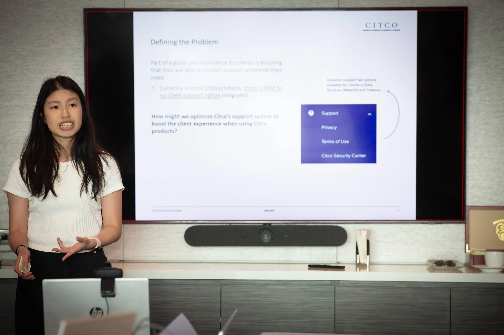
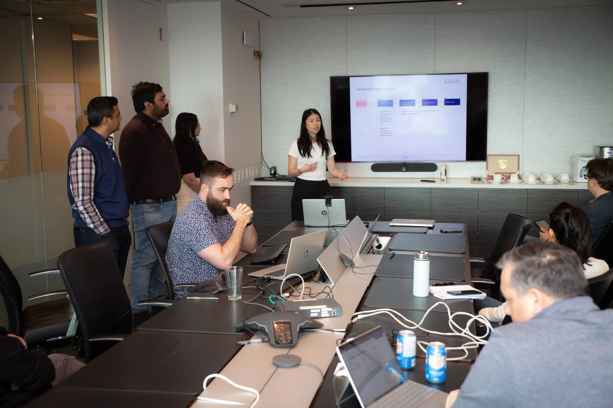

ChatCITCO
Introducing generative AI to improve customer support system among Citco applications

Role
Lead Product Designer
Duration
March 2023
Tools
Figma
Project type
UX Design, AI, Hackathon
With the emergence of generative AI and new technologies, Citco wanted to bring forth a challenge for IT employees to participate in a 3-day hackathon to solve any problem space within our company and present a working product. I was invited to participate in this hackathon alongside people from different IT fields ranging from developers and architects. We came up with a solution to optimize Citco’s support system through leveraging AI and machine learning. I was the lead designer on the team in charge of flushing out the concept, designing and presenting our final product.
My team placed first and had the opportunity to present our idea to Citco’s board of directors.
The Problem Space
While discussing potential problem spaces, I had noticed how there was a lack of customer support when it came to our applications. In analyzing my project team’s product (Citco Waterfall), this was what I found as the current support options that we provide on this application.
 Common support tab options available for clients in Citco Data Services, Waterfall and Treasury Applications. Where would a client go to get support for issues relating to the product or know who to contact?
This was further established when I got in touch with my product owner who had said they get customer feedback from clients writing in their issues to our separate IT portal which then would get resolved through a tiered customer support system. The response time for getting support could range from hours to a couple of days. I thought - There must be a faster way. This led me to thinking:
Common support tab options available for clients in Citco Data Services, Waterfall and Treasury Applications. Where would a client go to get support for issues relating to the product or know who to contact?
This was further established when I got in touch with my product owner who had said they get customer feedback from clients writing in their issues to our separate IT portal which then would get resolved through a tiered customer support system. The response time for getting support could range from hours to a couple of days. I thought - There must be a faster way. This led me to thinking:
Common support tab options available for clients in Citco Data Services, Waterfall and Treasury Applications. Where would a client go to get support for issues relating to the product or know who to contact?
The Challenge
Mapping out the current process
Forming a team from different products teams has its perks as we were able to tap into how different products handle client support. We reached out to our own teams and shared the different support approaches. I took our research and summarized what the current user journey was and some of pain points that comes with each step of the journey

What's the solution?
I led a quick brainstorming workshop to brainstorm ideas for our solution and weighing out the pros and cons for each idea we came up with. Through process of elimination and thinking about the users needs, we ultimately landed on creating a working chatbot that can be integrated within our existing products.
 Defining our use cases
Defining our use cases
Once we agreed on our solution, we got to discussing the different use cases for how a user might want to utilize this integratabtle feature in applications. We outlined four main use cases:
- How-to questions
- Encountering issues with an application
- Login/Authentication support
- Locating information
Exploration
As the designer on the team, I researched and looked at current usages of chat bot support system to make notes and find inspiration to what makes a good chatbot experience. Meanwhile the developers got to working out the framework to build out this integration.
 Designing and iterating
Designing and iterating
I explored many different iterations of the design (experimenting with the colours of our design systems, including attachments, screenshots, prompting answers), look and feel as well as drafting up sample copy ideas. Due to time constraints and the need to build a functioning demo, we went developed the most basic functionalities for the chat bot which was the chat interaction.

I also took into considered the conversation design of the chatbot, coming up with the copy and responses for common prompts. I did research on UX copy that would keeping things concise and intuitive.

Final Product
By the third day of the hackathon, we had a functioning demo product to present. Since the demo is stored locally in our company’s system, I’ve recreated what we demo’ed in this prototype.
Presenting our project
I was in charge of putting together our team’s slide deck, creating the structure of the presentation and presenting the overview of what our problem space was, our thinking, and our solution.


View Slide Deck
Takeaways
Embracing Constraints:
One of the most valuable lessons learned from the design hackathon was the importance of embracing constraints. With limited time, resources, and scope, our team was forced to think creatively and prioritize effectively. Rather than viewing constraints as limitations, we learned to see them as opportunities for innovation. By focusing on the essentials and finding solutions within the given constraints, we were able to deliver impactful designs that addressed the core needs of our users.
Resilience and Adaptability:This hackathon taught us the importance of resilience and adaptability in the face of challenges. From technical glitches to unexpected feedback, we couple obstacles throughout the hackathon. However, by maintaining a positive attitude, staying flexible, and persevering through setbacks, we were able to overcome these challenges and keep our project on track. This experience reinforced the importance of resilience and need for strong communication to overcome project challenges.
From this experience I have gained a deeper understanding of what it takes to create impactful and user-centred designs, setting a solid foundation for future projects.